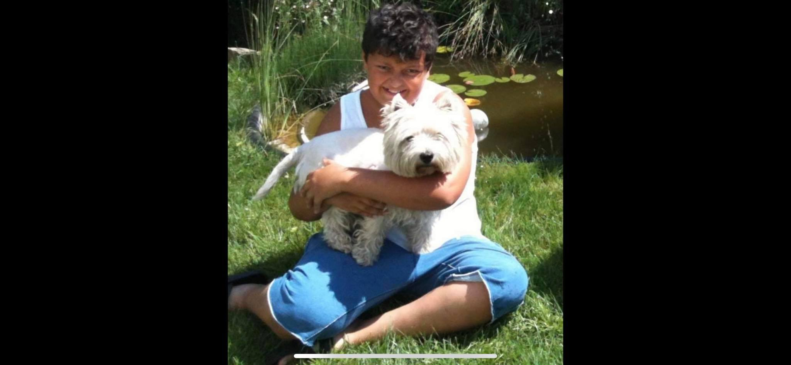

Üdvözöllek
Ewemor Martin a becses nevem és a Számalk Szalezinek nevezett iskola diákja vagyok a Szoftverfejlesztő és tesztelő szakon
Egyik kedvenc szabadiős tevékenységem a számotógépes játékokkal való játék.
Illetve nagyon szeretek a kutyáimmal foglalkozni akik már nagyon kicsi korom óta megvannak.
